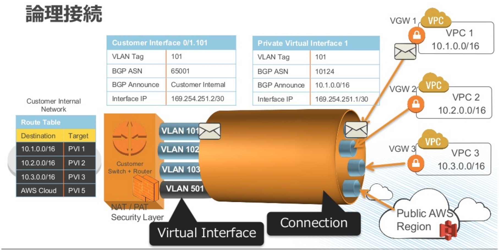

VPC: Virtual Private Cloud
特徴
- クラウド上のプライベートな仮想ネットワーク
- IGW 経由で Static NAT (Private:Public IP 1対1) でインターネットに出て行く
- リージョンサービス: リージョンをまたぐことはできない。
- VPC 作成は無料。
- BB: https://d1.awsstatic.com/webinars/jp/pdf/services/20190313_AWS-BlackBelt-VPC.pdf
CIDR ブロック
- VPC で使える IPv4 アドレスレンジ。
- 16〜28ビットのプレフィックスを指定可能。
- プレフィックス最小がクラスBで最大は残り4ビット。
サブネット
-
VPC の CIDR ブロックをサブネットに分割
- サブネットのプレフィックス(CIDRブロック)を指定する。
-
サブネットには AZ が明示的に紐づく
- AZ 内にサブネットを置く。1つの AZ に複数置ける。
- 1つのサブネットは複数 AZ にまたがることはできない。
-
同一 VPC のサブネット間のインスタンスの通信はプライベートアドレスで行われる。
- パブリック IP は SNAT のグローバル側なのでサブネット内から ping 打っても到達しなそう。
- EIP は SNAT 関係ないかもだけどサブネット間にルートが設定されてないため到達しない？
-
パブリックとプライベートのサブネット間もデフォルトで通信可能。
- 利用できる IP アドレス数は 5 つ差し引かれる
(参考) Backnet パターン
- サーバの公開用 (Web) と管理用 (SSH) のサブネットを分け、インスタンスからそれぞれに ENI を生やす。
- 管理用のプライベートアドレスのサブネットには VPN 経由でのみ接続できるようにする。(AZ はたぶん同一)
- 各 ENI には異なるセキュリティグループが設定できる。

ルートテーブル
- 各種ゲートウェイ (IGW, NAT GW, VGW) へのルートを登録する。
- ルートテーブルはサブネットに対して設定される。
- サブネット毎に個別にルートテーブルを指定する。
- IGW とローカルのルートがあればよいのでデフォルトでは1つの同じルートテーブルが複数のサブネットに割り当てられていた
ゲートウェイ
-
IGW (Internet Gateway)
-
プライベート/パブリックIP 1対1の Static NAT でインターネットに出て行くゲートウェイ
- 送信先を 0.0.0.0/0 としたデフォルトルートとして設定される
-
パブリックサブネット
- ルートテーブルでデフォルト GW に IGW が登録されているサブネット。
- 特にサブネットのオプションでパブリック/プライベートの区別がある訳ではない。
- https://docs.aws.amazon.com/ja_jp/vpc/latest/userguide/VPC_Subnets.html
-
-
NAT Gateway
- プライベートサブネットから NAPT でインターネットに出て行くゲートウェイ。
- インターネット側からプライベートサブネットにアクセスしないようにできる。
- パブリックサブネットに置かれる。ElP を使用する。
-
VGW (Virtual Private Gateway)
- VPC からインターネット VPN または専用線 (Direct Connect) で外部の拠点と接続するGW。
- 対向側は CGW (Customer Gateway) と呼ばれる。
-
https://milestone-of-se.nesuke.com/sv-advanced/aws/internet-nat-gateway/
- セキュリティ関連でプライベートサブネットに DB サーバ等を置く構成はよく出てくる。
- 外部にアウトバウンドで出て行く必要があればパブリックサブネットの NAT GW を使う。そうでなければパブリックサブネットの Web サーバ等とプライベートアドレスで通信できる。
ネットワークACL
- サブネットにつくファイアウォール。
- 基本はセキュリティグループでデフォルト Deny で設定。ネットワーク ACL は Any Allow で素通しになっている。
- ネットワーク ACL はサブネット全体で制御するような場合に使う。
- ネットワーク ACL はステートレスなのでインバウンド・アウトバウンド個別に設定する。
NAT インスタンス
- Amazon Linux をベースに NAT を構成した AMI (amzn-ami-vpc-nat) のインスタンス。
- NAT ゲートウェイと異なり、ユーザがソフトウェアアップデートやスケーリングを管理する必要がある。(NAT GW は Elastic にスケールする)
- EIP またはパブリック IP アドレスを使用する。(NAT GW は EIP)
-
セキュリティグループを関連づけてトラフィックをコントロールできる。
- NAT GW は SG 関連づけ出来ない。背後のインスタンスの SG かネットワーク ACL でコントロール。
-
ポート転送や踏み台サーバとしての使用ができる。(NAT GW はできない)
-
IP フラグメント化された TCP, ICMP パケットもリアセンブルする。
- NAT GW は UDP のみ。TCP, ICMP はリアセンブルしない。
-
送信元/送信先チェック (Source/Destination Checks) の無効化
- EC2 インスタンスはデフォルトでトラフィックの Source/Destination が自分かチェックする。NAT インスタンスは自分向けでないトラフィックも受け取る必要があるのでインスタンスでこれを無効にする必要がある。
-
https://docs.aws.amazon.com/ja_jp/vpc/latest/userguide/vpc-nat-comparison.html
踏み台 (Bastion) サーバと ELB による Web サーバのプライベートサブネット配置
- Web アプリケーションサーバと DB サーバをプライベートサブネットに配置。
- パブリックサブネットに Bastion サーバと NAT GW と ELB を配置。
- インターネットから Bastion サーバに SSH できるようセキュリティグループを設定。
- Bastion サーバから Web サーバと DB サーバに SSH できるようセキュリティグループを設定。
- Web サーバと DB サーバのセキュリティアップデートのダウンロード等は NAT GW 経由でインターネットに取りに行く。
- Web アクセスは ELB から Web サーバにリバースプロキシ。
VPC エンドポイント
- VPC の AZ サービスからインターネットを経由せずにパブリック IP 空間のリージョンサービスにアクセスする手段。
-
AZ サービス
- EC2, Redshift, EMR など
-
リージョンサービス
- S3, DynamoDB, CloudWatch など
-
ゲートウェイ VPC エンドポイント
- ルートテーブルにゲートウェイとして指定する。
- S3 と DynamoDB でサポート。
- おそらくマルチ AZ レプリケーションなので IP が1つにならない。DNS ラウンドロビンとかで IP 帰るのかも
-
インターフェイス VPC エンドポイント
-
ENI としてサブネット内のプライベート IP アドレスを持つエンドポイントが現れる。
- サービスのエンドポイントと ENI が AWS PrivateLink でリンクされる。
- VPC の DNS に ENI のプライベート IP が <サービス名>.<リージョン>.amazonaws.com のような A レコードで登録される。
-
インターフェイス VPC エンドポイントは ENI に対してアクセスするため、アクセス制御は ENI に関連付けたセキュリティグループで行う。
-
-
https://docs.aws.amazon.com/ja_jp/vpc/latest/userguide/vpc-endpoints.html
ピア接続
- 2つの VPC 間の接続。
- クロスリージョンやクロスアカウントの VPC との接続も可能。
-
直接接続している VPC とのみ通信可能で 2 ホップ以上先との通信 (推移的なピアリング接続) はできない。
- Direct Connect や VPN でオンプレから VPC に接続する場合も同様。推移的な接続はできない。
-
CIDR ブロックがかぶる VPC とはピアリング接続できない。
- https://docs.aws.amazon.com/ja_jp/vpc/latest/peering/what-is-vpc-peering.html
VPC のオプション
-
DNS hostnames
- インスタンスがパブリック IP アドレスについてのパブリック DNS ホスト名を受け取るかどうか
-
DNS resolution
- VPC DNS サーバによる名前解決のサポート
- プライベートホストゾーンに対する DNS クエリは VPC DNS サーバでのみ解決される
ELB: Elastic Load Balancing
概要
- 仮想ロードバランサー
- リスナー
- リスナールール: ルーティングのルールを定義する。
- ルールの条件が満たされると指定されたターゲットグループに転送などのアクションをとる。
- https://docs.aws.amazon.com/ja_jp/elasticloadbalancing/latest/application/load-balancer-listeners.html

-
ターゲットグループ
-
リスナールールに指定されたターゲットグループにトラフィックを振り分ける (ALB/NLB)。
- ターゲットの種類: インスタンス ID, IP アドレス, Lambda (ALB のみ)
- 非 VPC の Lambda も VPC Lambda も両方ターゲットにできる
- https://dev.classmethod.jp/articles/invoke-lambda-and-vpc-lambda-from-internal-alb/
- ターゲットの種類: インスタンス ID, IP アドレス, Lambda (ALB のみ)
-
1つのターゲット (リクエストを処理するインスタンス) を複数のターゲットグループに登録することも可能。
- CLB ではロードバランサーにインスタンスを登録。
- ECS コンテナもターゲットにできる。
-
-
ヘルスチェック
-
TCP/HTTP/HTTPS でキープアライブ
- インターバルと Healthy/Unhealthy に移行する試行回数を指定しておく。
-
Healthy のターゲットに転送。
- Unhealthy に遷移したら CloudWatch Events で通知。ヘルスチェックは続けるので Healthy に戻る場合も。
- インスタンスの再起動などの回復機能はない。
-
-
ELB 自体は負荷に応じて自動スケーリング (スケールアウト/スケールイン) する。
- スケーリングが間に合わないと 503 を返す。
-
リクエストの流れを中断することなくロードバランサーに対してターゲットの追加と削除が可能。
Ref
ALB: Application Load Balancer
- https://docs.aws.amazon.com/ja_jp/elasticloadbalancing/latest/application/introduction.html
- L7 (HTTP/HTTPS) レベルのロードバランシング
-
負荷分散アルゴリズム
- ラウンドロビン (デフォルト)
- 最小の未処理リクエスト (the least outstanding requests)
- outstanding: 未払いの、未決の
-
機能
- 複数ポート: 同一インスタンス上の複数ポートのサーバに負荷分散。(ALB/NLB でサポート)
-
パスベースのルーティング: URL のパスで振り分け。
- /api のパスなら API サーバに振り分けるとかできる。
-
ホストベースのルーティング: Host ヘッダで振り分け。(複数ドメイン)
- クエリ文字列/ヘッダベースのルーティング
- HTTP/2, WebSockets サポート。
- 別の URL へのリダイレクト。
- Lambda ターゲットのサポート。(NLB/CLB はサポートしない)
NLB: Network Load Balancer
- https://docs.aws.amazon.com/ja_jp/elasticloadbalancing/latest/network/introduction.html
-
L4 (TCP/UDPレベル) NAT ロードバランサー
- UDP をサポート。
-
大規模トラフィック対応: 毎秒数百万のリクエストを処理できる
-
負荷分散アルゴリズム: フローハッシュアルゴリズム
- パケットでなくフローレベルで振り分け。
- プロトコル、送信元 IP アドレス、送信元ポート、宛先 IP アドレス、宛先ポート、TCP シーケンス番号からハッシュを計算しターゲットに振り分け。(UDP ならシーケンス番号以外)
- 接続中は単一ターゲットにルーティングされる。Sticky になる。
- TCP シーケンス番号は ISN のこと？
-
静的 (Static) IP アドレスのサポート
- AZ (サブネット) ごとに1つの Static IP が自動的に提供される。
- EIP で独自の固定 IP を設定することも可能。
- FW などの制約で宛先を IP 指定しなければいけない場合など。
-
送信元 IP アドレスの保持
- DNAT/SNAT するだけだから大規模トラフィックもさばける

- [https://kanny.hateblo.jp/entry/2017/09/20/142638](https://kanny.hateblo.jp/entry/2017/09/20/142638)
- NLB はセキュリティグループを設定できない (ALB, CLB は可)
- ターゲットのセキュリティグループを 0.0.0.0/0 にする必要がある。(公開サービスなら)
CLB: Classic Load Balancer
- L4/L7 リバースプロキシ。EC2-Classic ネットワークで使用。
-
負荷分散アルゴリズム:
- TCP リスナーにはラウンドロビン。
- HTTP/HTTPS リスナーには最小の未処理リクエスト。
-
CLB とターゲットのインスタンスのポートは1対1対応
- CLB の1つのポートから複数のインスタンスや複数ポートに振り分けられない。
参照
- 種類: https://docs.aws.amazon.com/ja_jp/AmazonECS/latest/developerguide/load-balancer-types.html
- 比較: https://aws.amazon.com/jp/elasticloadbalancing/features/#compare
ELB と AZ
- ELB は AZ サービス。DNS とロードバランサーノードで成り立つ。
-
ELB 作成時に AZ を指定。
- ロードバランサーノードが指定された AZ に作成され、その AZ 内のターゲットに転送。
- DNS を引くとそれぞれの AZ のロードバランサーの IP が返ってくる。
-
耐障害性 (Fault tolerance) のためにマルチ AZ 指定が推奨される。
- マルチ AZ ならある AZ がダメになっても healthy なターゲットのある AZ のロードバランサーが利用される。
-
ALB では2つ以上の AZ を設定する必要がある。
-
設定された各 AZ に1つ以上のターゲットがないと意味がない。
- ELB が存在しない AZ にいるインスタンスをターゲットグループに登録しても、そのターゲットには転送されない。
- ターゲットがいない AZ のロードバランサーの IP は DNS で返らないはずだが、状況によって IP が返ってそっちの AZ に振り分けられてタイムアウトになるらしい。
- Lambda ターゲットの AZ はどうなってるの？
-
ELB をパブリックサブネットに配置してターゲットのインスタンスはプライベートサブネットという構成もできる。
クロスゾーン負荷分散: Cross-Zone Load Balancing
- ALB/CLB: デフォルト有効、NLB: デフォルト無効
- デフォルトでは各 AZ のロードバランサーノードはその AZ のターゲットでしかトラフィックを分散させない。
-
クロスゾーン負荷分散を有効にすることで有効な AZ の全てのターゲットに分散する。
- Route53 の加重ルーティングが効いている？通常はラウンドロビン。
-
クロスゾーン負荷分散が無効な場合: 各 AZ に 50% ずつのトラフィックが振り分けられる。

- クロスゾーン負荷分散が有効な場合: ターゲットに均等にトラフィックが振り分けられる。

- 参照
- https://docs.aws.amazon.com/ja_jp/elasticloadbalancing/latest/network/network-load-balancers.html#availability-zones
- ELB の詳細: https://docs.aws.amazon.com/ja_jp/elasticloadbalancing/latest/userguide/how-elastic-load-balancing-works.html
- ALB の作成: https://docs.aws.amazon.com/ja_jp/elasticloadbalancing/latest/application/create-application-load-balancer.html
- NLB の作成: https://docs.aws.amazon.com/ja_jp/elasticloadbalancing/latest/network/create-network-load-balancer.html
- NLB で複数AZ構成での挙動: https://tech.unifa-e.com/entry/2018/03/16/111538
- NLB のクロスゾーン負荷分散について: https://qiita.com/atsumjp/items/f42ace079b808a25bd28
- AZ のパージ: https://dev.classmethod.jp/cloud/aws/purge-resources-specific-az/
- ALB でターゲットのいない AZ を指定した話: https://qiita.com/ninomiyt/items/0f11757f00fa20ca08bf
SSL Termination: TLS Termination / SSL offloading
- ELB で SSL を終端してターゲット側は SSL 対応せずに済む
- 証明書管理や TLS/SSL のパッチなどの管理が軽減される。
- (NLB は非対応だったが 2019 年から対応開始)
- https://aws.amazon.com/jp/blogs/news/new-tls-termination-for-network-load-balancers/
- https://dev.classmethod.jp/cloud/aws/nlb-support-tls-termination-and-access-log/
スティッキーセッション (Sticky session)
- Cookie により同一のターゲットにセッションを転送する機能。デフォルト無効。
- HTTP の機能なので ALB, CLB がサポート。
-
ロードバランサーによって生成された Cookie による維持。
- 設定された有効期限の間、同一ターゲットとセッションを維持。
-
アプリケーションによって生成された Cookie による維持。
- 指定された Cookie が存在する限り同一ターゲットにセッションを維持。
- 応答に新しいアプリケーション Cookie が含まれている場合のみ、新しい維持 Cookie を挿入します。ロードバランサー維持 Cookie はリクエストごとに更新されることはありません。アプリケーション Cookie が明示的に削除されるかまたは有効期限切れになると、新しいアプリケーション Cookie が発行されない限り、セッションは sticky ではなくなります。
- ALB では使えないっぽい: https://qiita.com/nori4k/items/2455f3987dae1ab214d4
アクセスログ
- 取得するにはアクセスログを有効にして S3 バケットに保存するよう設定する。
- CloudWatch Log とかと連携してないので分析するには Athena とか使う必要がある。
- https://docs.aws.amazon.com/ja_jp/elasticloadbalancing/latest/application/load-balancer-access-logs.html
Pre-Warming (暖気運転)
- ELB のスケーリングが間に合わない場合を予想して事前に ELB をスケールさせておくこと。
- AWS サポートに申請が必要。
- NLB は大規模トラフィックをサポートできるので不要らしい。
Connection Draining
- ELB でインスタンスが登録解除/Unhealthyになってからロードバランサーが接続を保持する秒数。転送は止める。
- 300秒でデフォルト有効。
-
目的
- 時間のかかるリクエストの完了を待つ。
- Web サーバのバックエンド DB の短時間のフェイルオーバーへの対処。
- 等
-
https://aws.amazon.com/jp/blogs/aws/elb-connection-draining-remove-instances-from-service-with-care/
ALB での HTTPS の利用
- HTTPS リスナーを作って証明書を指定する。
-
AWS Certificate Manager で証明書を作って ALB に設定できる。
- ACM と統合されている ELB, CloudFront, API GW では証明書の費用が無料。
Auto Scaling
Ref. AWS: Auto Scaling
Amazon Route 53
https://www.slideshare.net/AmazonWebServicesJapan/aws-black-belt-tech-2016-amazon-route-53
概要
- 権威 DNS のマネージドサービス
- (参考) 権威 DNS サーバ: あるゾーンの情報を保持し、他のサーバに問い合わせることなく応答を返すことができるサーバ
ホストゾーン
-
ドメイン・サブドメインの DNS リソースレコードを管理するコンテナ。
- (参考) 通常の DNS はサブドメインを別ゾーンに委任することもできる。委任する場合は親ドメイン(親ゾーン) に定義した NS レコードでサブドメインのDNSサーバへ誘導する。
-
可用性 (availability)100% の SLA を提供。
- 各ホストゾーンは異なるエッジロケーションの 4台の DNSサーバ (Delegation Set) で管理される。
- Delegation Set の DNS サーバのドメイン名は 4つの TLD (.com, .net, .org, .co.uk) にまたがって設定される。
- ns-2048.awsdns-64.com
- ns-2049.awsdns-65.net
- ns-2050.awsdns-66.org
- ns-2051.awsdns-67.co.uk
-
制限
- AWS アカウント毎に 500 ゾーンまで。(上限緩和可能)
- ホストゾーンあたり 10,000 レコードまで。(上限緩和可能)
-
パブリックホストゾーン
- インターネットで使用するリソースレコードの管理。
-
プライベートホストゾーン
- VPC のプライベートネットワークで使用するリソースレコードを管理。
- 作成時に対象にする VPC を指定する。
Alias レコード
-
CNAME のように別名がつけられる Route 53 固有の機能。
- A レコードまたは AAAA レコードで利用可能
- A/AAAA レコードを CNAME 同様に他のレコードにマップできる。
- A/AAAA レコードの IP を指定する部分が別レコード名になっている状態。
-
AWS サービスのエンドポイントを登録するのに使用。
- AWS サービスに固定のドメイン名をアサインする場合。
- CloudFront, 静的 Web サイトの S3 バケット, ELB など。
- CloudFront, S3, ELB へのクエリは無料になる。
- ELB に IPv4 と IPv6 の DNS 名 (www.acme.com) をつける例:
- A www.acme.com (Alias) elb1.us-east-1.elb.amazonaws.com
- AAAA www.acme.com (Alias) elb1.us-east-1.elb.amazonaws.com
-
CNAME よりレスポンスが高速。
- AWS サービスのエンドポイントは CNAME でも登録可能。
- ただし CNAME だといったん別名が返り、さらに別名の A レコードを引く必要がある。
- Alias だと直接 IP アドレスが返る。
-
Zone Apex の利用
-
Zone Apex は管理しているドメインの頂点となるノード
- www.example.com なら example.com
-
ブラウザから ELB へのアクセス (名前解決) に Zone Apex を使いたいような場合の話。
- Alias レコードにより AWS サービスのエンドポイントの名前解決に Zone Apex が利用可能となる。
- AWS サービスのエンドポイントを DNS に登録する場合、CNAME レコード (か Alias レコード) を登録する必要がある。
- しかし、次の DNS 仕様 により Zone Apex には CNAME レコードが登録できない。
- CNAME レコードと同じ名前で他の DNS レコードを登録してはならない。
- Zone Apex は既に NS レコードが登録されているため CNAME レコードを登録できない。
-
- NOTE: この例のように動的に IP アドレスが変更される AWS サービスのエンドポイントについては AWS により A レコードが登録される。CNAME をその A レコードに対して設定することで固定のドメイン名を設定できるが Zone Apex では CNAME が使えない。
ルーティングポリシー
- (レコードに複数リソースがある場合の) 動的なトラフィックルーティング。
-
シンプルルーティング
- ドメインにリソース (レコード) を単純に設定する。
- レコードに複数のリソース (IP アドレス等) がある場合は全ての値をランダムな順序で返す。
-
加重 (Weighted) ルーティング
- 複数のリソースを重み付けして登録。重みの高いものに多くルーティングされる。
- 複数リソースに同じ名前とタイプでレコードを作成、レコードごとに重みを割り当てる。
-
Latency (遅延) ルーティング
- 最も遅延の少ないリージョンのリソースにルーティング。
- 複数リージョンで DR 運用する場合。
-
Geolocation (位置情報) ルーティング
- 位置情報に基づくルーティング。国やアメリカの州に結びつける。
- ユースケース: ローカライズ、コンプライアンス、パフォーマンス。
-
Geoproximity (地理近接性) ルーティング
- ユーザの位置情報とリソースのリージョンの地理的近接性によるルーティング。
-
Failover ルーティング
- DNS フェイルオーバー(下記) により、ヘルスチェックで Healthy なエンドにのみルーティング。
-
複数値回答 (Multi-value) ルーティング
- ランダムに選ばれた最大8つの Healthy なレコードを応答。
- シンプルルーティングの複数値と異なり各インスタンスにヘルスチェックが行われる。
-
リージョンをまたぐ場合は動的なルーティングポリシーで各リージョンの ELB に振り分けるような運用になる。
- トラフィックフロー
- 複雑なルーティングを順序を設定してトラフィックポリシーで設定できる。
- ビジュアルエディターがある。
DNS フェイルオーバー
-
ヘルスチェック
- Route 53 用の世界各地に15 以上あるヘルスチェッカーからエンドポイントにリクエスト。
- ヘルスチェック間隔は30秒か10秒から選択。
- 15台なので30秒でも2秒に一回リクエストを受ける。
- ヘルスチェック結果が Route 53 DNS サーバに伝播される。
-
ヘルスチェックは Failover ルーティング以外でも指定可能。
- 1つも正常なエンドポイントがない場合、全てのエンドポイントを正常とみなして動作する。
-
セキュリティグループ等にモニタリングパケットを受けられるよう設定が必要。
- aws route53 get-checker-ip-ranges
-
ヘルスチェックの種類
-
TCP ヘルスチェック
- エンドポイントとの TCP 接続の確立。
-
HTTP/HTTPS ヘルスチェック
- エンドポイントからの HTTP 2xx または 3xx 応答
-
HTTP/HTTPS ヘルスチェックと文字列一致
- HTTP/HTTPS ヘルスチェックに加え、レスポンス本文から指定された文字列を検索
-
CloudWatch アラーム
- https://docs.aws.amazon.com/ja_jp/Route53/latest/DeveloperGuide/health-checks-types.html
- https://docs.aws.amazon.com/ja_jp/Route53/latest/DeveloperGuide/dns-failover-determining-health-of-endpoints.html
-
Amazon CloudFront
概要
-
エッジロケーションによる CDN サービス
- クライアントへのレスポンス向上。
- オリジンサーバの負荷軽減。
-
DNS が Geolocation で位置情報 DB から直近のエッジーサーバの IP を返す
- デフォルトのドメインは *.cloudfront.net
- 独自ドメイン使うには Alias or CNAME 設定と SSL/TLS 証明書設定。
- Alias はタダになるからこちらが正解！
-
オリジンサーバ
- オリジナルのコンテンツが置いてある場所。
- S3 バケット、S3 静的 Web ホスティング、カスタムオリジンがある。
-
エッジサーバー
- エッジロケーションにあるキャッシュサーバ
-
HTTP/2, WebSockets サポート。
- ディストリビューション
- ドメインごとの CloudFront 設定
動的コンテンツ機能
- オリジンがヘッダやクエリ文字列を見て動的にコンテンツ生成する場合。
- 全てをフォワードするとキャッシュ効率が下がるため、フォワードするヘッダ、Cookie、クエリ文字列パラメータを Whitelist/Blacklist 方式で登録する。
HTTPS 暗号化: クライアント-エッジサーバ間
- デフォルトの cloudfront.net では SSL 証明書を標準で利用出来る
- 独自ドメイン使用では X509 PEM 形式のサーバ証明書をインポートする
HTTPS 暗号化: エッジサーバ-オリジンサーバ間
-
S3 バケット
- クライアントからアクセスされたプロトコル (HTTP/HTTPS) に準する
- HTTPS 必須にするにはディストリビューションの設定で Viewer Protocol Policy を次のいずれかに指定
- Redirect HTTP to HTTPS
- HTTPS Only
-
S3 静的 Web ホスティング
- S3 静的 Web ホスティングは HTTPS を利用できない。
-
カスタムオリジン
-
ディストリビューションで Origin Protocol Policy を次のいずれかに設定
- Redirect HTTP to HTTPS
- HTTPS Only
-
かつ、SSL プロトコル (TLSv1.2, TLSv1.1, TLSv1, SSLv3) を選択できる。
-
署名付き URL (Pre-signed URL)
- CloudFront でも期間限定の署名付き URL を作成できる。
- レンタルコンテンツ配信や限定されたユーザへのコンテンツ配信など。
署名付き Cookies
- URL を変更したくない場合はこちらも利用できる。
オリジンサーバの保護: オリジンサーバの URL 直アクセスの禁止
-
S3 バケット
- OAI (Origin Access Identity) をディストリビューションに設定して S3 のバケットポリシーでアクセス制限。
-
S3 静的 Web ホスティング
- S3 静的 Web ホスティングはパブリックに設定する必要があるため保護できない。
-
カスタムオリジン
- CloudFront のオリジンカスタムヘッダーを利用。
- 指定された任意のヘッダをオリジンサーバ側でチェックすることで CloudFront のみからのアクセスを受け付ける。
- オリジンサーバへのアクセス自体はパブリックとなるので注意。
例題:
Q. すべての従業員にトレーニングビデオを配布するシステムを構築するように依頼されました。CloudFrontを使用して S3に保存されているものの、直接公開されていないコンテンツを提供する必要があります。
この要件を満たすため必要なサービスの設定を選択してください。
A. CloudFront に OAI を作成して S3 オブジェクトに割り当てる。
解説: S3 バケットから配信するコンテンツへのアクセスを制限するには、CloudFront 署名付き URL または署名付き Cookie を作成してコンテンツへのアクセスを制限してから、OAI (Origin Access Identity) という特別な CloudFront ユーザを作成して S3 でそのユーザのみにアクセス許可を設定する。ユーザは S3 バケットへの直接 URL を使用してファイルにアクセスすることはできない。
Lambda@Edge
- CloudFront エッジロケーションでリクエスト/レスポンスを傍受でき、CloudFront イベント発生時に Lambda 関数を実行できる。
- S3 オリジンへの直接アクセス制限と、インデックスドキュメント機能を共存させる方法
AWS Direct Connect
概要
- オンプレ拠点 (オフィスや DC) と VPC を専用線で接続する
- セットアップに数週間はかかるしお高い。
-
EC2, VPC, S3, DynamoDB など AWS のすべてのサービスを Direct Connect とともに使用できる、という記述があるが S3, DynamoDB へのアクセスはエンドポイント経由ということ？
-
Ref. https://www.slideshare.net/AmazonWebServicesJapan/aws-black-belt-tech-aws-direct-connect
Direct Connect ロケーション
- Ref. https://dev.classmethod.jp/cloud/aws/direct-connect-guide/
- AWS と通信事業者などの AWS Direct Connect パートナーが IX に用意した相互接続ポイント。
- 東京リージョンは東京2カ所、大阪1カ所、台北2カ所。
-
専有型: 専用接続 (Dedicated Connections)
- Direct Connect ロケーションの AWS のルータとの接続を専有するプラン。
- 1Gbps/10Gbps の2種類から選択。
- 共用型と比べて高価だが、論理接続が作り放題かつ論理接続数は課金対象にならないので複数 VPC との接続が必要であれば、こちらがオススメ。
-
共有型: ホスト型接続 (Hosted Connections)
- 通信事業者から払い出される物理接続を他のユーザと論理接続で共有する。
- 50Mbps~10Gbps
物理接続と論理接続
- Direct Connect ロケーションの物理接続はユーザ側スイッチで VLAN で論理接続に分割
-
VIF (Virtual Interface)
- ユーザ側スイッチの仮想 NIC。
- 個別に VLAN ID が割り当てられる。
-
BGP で VPC へのルーティング情報を得る。
- VPC (VGW) は論理接続と1対1で紐づくため、複数のVPCを接続するにはその分の論理接続が必要

NOTE: Direct Connect からインターネット VPN へのフォールバック
- CGW から両方に接続する。
- CGW で BGP により Direct Connect 障害時にインターネット VPN にルーティングされるよう設定。
プライベート接続/パブリック接続
- VIF ごとにプライベート接続/パブリック接続を設定
-
プライベート接続
- VPC/オンプレ相互にプライベート IP を使用。
- VPC のプライベートサブネットにアクセス。
-
パブリック接続
- AWS のパブリックサービスへの接続。
- パブリック IP に接続するためにオンプレ側もパブリック IP (NAT) が必要。

Direct Connect Gateway
- 複数リージョンの VPC にプライベート接続でアクセスするゲートウェイ。
-
プライベート接続ではユーザ側スイッチの VIF と VPC 側の VGW が１対１接続される。
- 通常、別リージョンの VPC にアクセスするには別リージョンの Direct Connect ロケーションを使う。
-
いずれかのリージョンで Direct Connect Gateway を作れば全リージョンの VPC にアクセスできるようになる。

- Direct Connect Gateway 経由で VPC 同士は通信できない。
- Direct Connect Gateway 経由でユーザの別拠点にはアクセスできない。
Direct Connect の課金
- ポート時間とデータ転送に分けて請求
-
ポート時間
- 接続タイプ (専有/共有) と容量ごとに価格設定
- 消費されたポート時間
- 1時間未満の使用は1時間として請求
-
データ転送
- Direct Connect 経由の通信に対して GB 単位の転送料
Transit Gateway
- 複数の VPC 同士やオンプレとの Direct Connect や VPN を HUB となるゲートウェイで接続するサービス。
- スター型ネットワークでルーティングテーブルの制御を Transit Gateway で集中管理できる。
- VPN ピア接続は推移的な通信ができないため複数 VPC だとそれぞれピア接続を設定したり Direct Connect や VPN を接続する必要があり複雑になるが、Transit Gateway なら集中接続できる。
- https://aws.amazon.com/jp/transit-gateway/
AWS VPN (AWS Managed VPN)
豆知識: パイロットライト
- 最小限のバージョンの環境が常にクラウドで実行されているDRシナリオを表すためによく使用されます。
- AWSでシステムの最も重要なコア要素を設定して実行することでパイロットライトを維持できます。
- 回復時には、重要なコアを中心に本格的な本番環境を迅速にプロビジョニングできます。